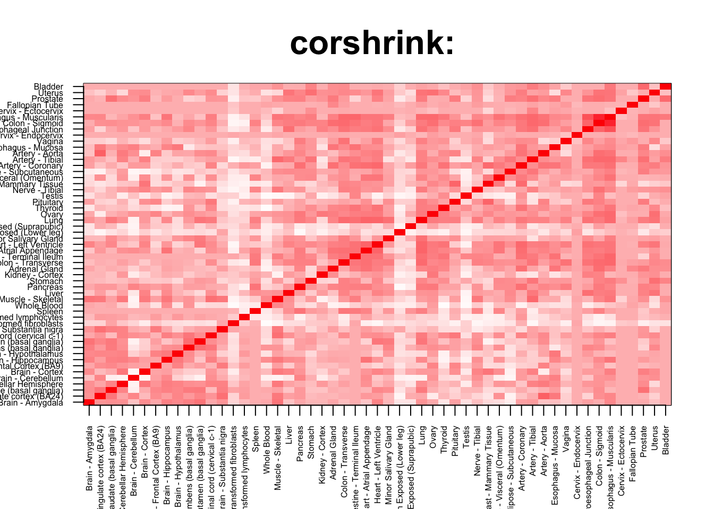

rm(list=ls())
corshrink_data <- get(load("../output/ash_cor_only_voom_pearson_halfuniform_gtex_tissues.rda"))
cor_data <- get(load("../output/cor_tissues_non_ash_voom_pearson.rda"))common_samples <- get(load("../output/common_samples.rda"))
tissue_labels <- read.table(file = "../data/GTEX_V6/samples_id.txt")[,3]
#library(data.table)
#data <- data.frame(fread("../data/GTEX_V6/cis_gene_expression.txt"))
#matdata <- t(data[,-c(1,2)])
gene_names <- as.character(read.table(file = "../data/GTEX_V6/gene_names_GTEX_V6.txt")[,1])
gene_names_1 <- as.character(sapply(gene_names, function(x) return(strsplit(x, "[.]")[[1]][1])))
U <- unique(tissue_labels)tab <- array(0, dim(corshrink_data)[3])
skin_set <- grep("Skin", U)
for(m in 1:dim(corshrink_data)[3]){
temp <- corshrink_data[skin_set, skin_set,m]
temp1 <- corshrink_data[order_index[-(1:13)], order_index[-(1:13)],m]
tab[m] <- median(temp[row(temp) > col(temp)]) - median(temp1[row(temp1) > col(temp1)])
}
ordering_high <- order(tab, decreasing = TRUE)[1:100]
ordering_low <- order(tab, decreasing = FALSE)[1:100]top_gene <- gene_names_1[ordering_high[1]]
col=c(rev(rgb(seq(1,0,length=1000),1,seq(1,0,length=1000))),
rgb(1,seq(1,0,length=1000),seq(1,0,length=1000)))
image(as.matrix(corshrink_data[order_index,order_index, ordering_high[1]]),
col=col, main=paste0("corshrink: "), cex.main=2,
xaxt = "n", yaxt = "n", zlim=c(-1,1))
axis(1, at = seq(0, 1, length.out = 53), labels = U[order_index], las=2, cex.axis = 0.5)
axis(2, at = seq(0, 1, length.out = 53), labels = U[order_index], las=2, cex.axis = 0.5)
bottom_gene <- gene_names_1[ordering_low[1]]
col=c(rev(rgb(seq(1,0,length=1000),1,seq(1,0,length=1000))),
rgb(1,seq(1,0,length=1000),seq(1,0,length=1000)))
image(as.matrix(corshrink_data[order_index,order_index, ordering_low[1]]),
col=col, main=paste0("corshrink: "), cex.main=2,
xaxt = "n", yaxt = "n", zlim=c(-1,1))
axis(1, at = seq(0, 1, length.out = 53), labels = U[order_index], las=2, cex.axis = 0.5)
axis(2, at = seq(0, 1, length.out = 53), labels = U[order_index], las=2, cex.axis = 0.5)
high_skin_nonskin_genes <- gene_names_1[ordering_high]
low_skin_nonskin_genes <- gene_names_1[ordering_low]
write.table(cbind.data.frame(high_skin_nonskin_genes), quote = FALSE, file = "../utilities/skin_nonskin/high_skin_nonskin.txt", row.names = FALSE, col.names = FALSE)
write.table(cbind.data.frame(low_skin_nonskin_genes), quote = FALSE, file = "../utilities/skin_nonskin/low_skin_nonskin.txt", row.names = FALSE, col.names = FALSE)tab <- read.delim("../utilities/skin_nonskin/pathway_high.tab")
head(cbind.data.frame(tab$pathway, tab$q.value), 100)## tab$pathway
## 1 IL-7
## 2 Alpha 6 Beta 4 signaling pathway
## 3 Focal adhesion - Homo sapiens (human)
## 4 inactivation of gsk3 by akt causes accumulation of b-catenin in alveolar macrophages
## 5 Alpha6Beta4Integrin
## 6 Non-integrin membrane-ECM interactions
## 7 Focal Adhesion
## 8 Alpha6 beta4 integrin-ligand interactions
## 9 wnt signaling pathway
## 10 Spinal Cord Injury
## 11 Validated transcriptional targets of AP1 family members Fra1 and Fra2
## 12 Validated targets of C-MYC transcriptional repression
## 13 VEGFA-VEGFR2 Signaling Pathway
## 14 Cell-Cell communication
## 15 a6b1 and a6b4 Integrin signaling
## 16 akt signaling pathway
## 17 PI3K-Akt signaling pathway - Homo sapiens (human)
## 18 Wnt signaling pathway - Homo sapiens (human)
## 19 IGF-Core
## 20 Laminin interactions
## 21 pyrimidine deoxyribonucleosides salvage
## 22 Wnt Signaling Pathway and Pluripotency
## 23 segmentation clock
## 24 IL-7 Signaling Pathway
## 25 Focal Adhesion-PI3K-Akt-mTOR-signaling pathway
## 26 Leptin
## 27 Longevity regulating pathway - multiple species - Homo sapiens (human)
## 28 multi-step regulation of transcription by pitx2
## 29 Signaling events mediated by VEGFR1 and VEGFR2
## 30 Amino acid synthesis and interconversion (transamination)
## 31 PI3K-AKT-mTOR signaling pathway and therapeutic opportunities
## 32 AMPK signaling pathway - Homo sapiens (human)
## 33 Vitamin C (ascorbate) metabolism
## 34 Interleukin-17 signaling
## 35 bioactive peptide induced signaling pathway
## 36 IL6
## 37 IL2
## 38 Angiopoietin Like Protein 8 Regulatory Pathway
## 39 AKT phosphorylates targets in the nucleus
## 40 insulin
## 41 FoxO signaling pathway - Homo sapiens (human)
## 42 insulin Mam
## 43 Type I hemidesmosome assembly
## 44 Signaling Pathways in Glioblastoma
## 45 Developmental Biology
## 46 MAPK6/MAPK4 signaling
## 47 EGFR1
## 48 Small cell lung cancer - Homo sapiens (human)
## 49 Extracellular matrix organization
## 50 NAD metabolism, sirtuins and aging
## 51 Cell junction organization
## 52 Downstream signaling events of B Cell Receptor (BCR)
## 53 IL-2 Signaling Pathway
## 54 Retinoblastoma (RB) in Cancer
## 55 PI3K/AKT Signaling in Cancer
## 56 Collagen formation
## 57 Longevity regulating pathway - Homo sapiens (human)
## 58 p53 signaling pathway
## 59 Presenilin action in Notch and Wnt signaling
## 60 BDNF
## 61 Metabolism of vitamins and cofactors
## 62 Insulin Signaling
## 63 EGF-EGFR Signaling Pathway
## 64 Hepatitis C and Hepatocellular Carcinoma
## 65 FoxO family signaling
## 66 L1CAM interactions
## 67 D-<i>myo</i>-inositol (1,3,4)-trisphosphate biosynthesis
## 68 1D-<i>myo</i>-inositol hexakisphosphate biosynthesis II (mammalian)
## 69 Wnt Signaling Pathway Netpath
## 70 il-7 signal transduction
## 71 Regulation of KIT signaling
## 72 IL2-mediated signaling events
## 73 Interferon type I signaling pathways
## 74 Copper homeostasis
## 75 ErbB Signaling Pathway
## 76 role of nicotinic acetylcholine receptors in the regulation of apoptosis
## 77 Nitrogen metabolism - Homo sapiens (human)
## 78 superpathway of pyrimidine deoxyribonucleoside salvage
## 79 Non-small cell lung cancer - Homo sapiens (human)
## 80 MET activates PTK2 signaling
## 81 Kit receptor signaling pathway
## 82 Overview of nanoparticle effects
## 83 prion pathway
## 84 Growth hormone receptor signaling
## 85 Thyroid hormone signaling pathway - Homo sapiens (human)
## 86 Coregulation of Androgen receptor activity
## 87 ATF-2 transcription factor network
## 88 Syndecan interactions
## 89 superpathway of D-<i>myo</i>-inositol (1,4,5)-trisphosphate metabolism
## 90 E-cadherin signaling in keratinocytes
## 91 PIP3 activates AKT signaling
## 92 Metabolism
## 93 Wnt Signaling Pathway
## 94 PI3K/AKT activation
## 95 GAB1 signalosome
## 96 Transcription factor regulation in adipogenesis
## 97 BCR
## 98 G1 to S cell cycle control
## 99 DNA Damage Response
## 100 Wnt
## tab$q.value
## 1 0.0002398867
## 2 0.0003426171
## 3 0.0003920586
## 4 0.0003920586
## 5 0.0003920586
## 6 0.0003920586
## 7 0.0012761020
## 8 0.0017458653
## 9 0.0017458653
## 10 0.0031850881
## 11 0.0031850881
## 12 0.0031850881
## 13 0.0031980727
## 14 0.0042431486
## 15 0.0050663736
## 16 0.0054073619
## 17 0.0055733746
## 18 0.0055733746
## 19 0.0071414198
## 20 0.0075095720
## 21 0.0075095720
## 22 0.0075095720
## 23 0.0076852789
## 24 0.0083324748
## 25 0.0086848534
## 26 0.0092764198
## 27 0.0100804274
## 28 0.0111386112
## 29 0.0111386112
## 30 0.0111386112
## 31 0.0111386112
## 32 0.0126823377
## 33 0.0128678718
## 34 0.0128678718
## 35 0.0130835086
## 36 0.0137439638
## 37 0.0140397494
## 38 0.0140397494
## 39 0.0140397494
## 40 0.0140397494
## 41 0.0140397494
## 42 0.0162220887
## 43 0.0162220887
## 44 0.0162395473
## 45 0.0162395473
## 46 0.0162395473
## 47 0.0165062602
## 48 0.0168076317
## 49 0.0168076317
## 50 0.0168076317
## 51 0.0168076317
## 52 0.0172091275
## 53 0.0172521848
## 54 0.0172521848
## 55 0.0176446495
## 56 0.0187760198
## 57 0.0199473297
## 58 0.0200528594
## 59 0.0200528594
## 60 0.0200528594
## 61 0.0206241447
## 62 0.0208469669
## 63 0.0216417450
## 64 0.0225182079
## 65 0.0231368350
## 66 0.0231368350
## 67 0.0234018900
## 68 0.0234018900
## 69 0.0234018900
## 70 0.0255805308
## 71 0.0255805308
## 72 0.0260013102
## 73 0.0260013102
## 74 0.0262847797
## 75 0.0262847797
## 76 0.0262847797
## 77 0.0262847797
## 78 0.0262847797
## 79 0.0266165959
## 80 0.0287167736
## 81 0.0300464833
## 82 0.0301369760
## 83 0.0301369760
## 84 0.0301369760
## 85 0.0301369760
## 86 0.0306995889
## 87 0.0306995889
## 88 0.0318015633
## 89 0.0318015633
## 90 0.0344252972
## 91 0.0344252972
## 92 0.0344448608
## 93 0.0344448608
## 94 0.0344448608
## 95 0.0344448608
## 96 0.0344448608
## 97 0.0344448608
## 98 0.0344448608
## 99 0.0344448608
## 100 0.0344448608pathway2 <- read.delim("../utilities/skin_nonskin/pathway_high.tab")
if(length(which(pathway2$q.value < 0.05)) > 2){
pathway2 <- pathway2[which(pathway2$q.value < 0.05),]
}
maxpath = 75
pathway <- pathway2[1:min(maxpath, dim(pathway2)[1]), ]
ensembl_genes <- pathway$members_input_overlap
pathway_list_genes <- sapply(ensembl_genes, function(x) return(strsplit(as.character(x), "; ")))
all_genes <- Reduce(union, pathway_list_genes)
pathway_mat <- matrix(0, length(pathway_list_genes), length(all_genes))
for(l in 1:dim(pathway_mat)[1]){
pathway_mat[l, match(pathway_list_genes[[l]], all_genes)] <- 1
}
pathway_bimat <- (pathway_mat)%*%t(pathway_mat)
pathway_bimat_prop <- diag(1/sqrt(diag(pathway_bimat)), dim(pathway_bimat)[1]) %*% pathway_bimat %*% diag(1/sqrt(diag(pathway_bimat)), dim(pathway_bimat)[1])
col=c(rev(rgb(seq(1,0,length=1000),1,seq(1,0,length=1000))),
rgb(1,seq(1,0,length=1000),seq(1,0,length=1000)))
heatmap(pathway_bimat_prop, labRow = pathway$pathway, labCol = pathway$pathway, cexRow = 0.3, cexCol = 0.3, col = col, zlim = c(-1,1),
scale = "none", margins = c(5, 5))tab <- read.delim("../utilities/skin_nonskin/GO_high.tab")
head(cbind.data.frame(tab$term_name, tab$q.value), 100)## tab$term_name
## 1 single-organism cellular process
## 2 cell motility
## 3 localization of cell
## 4 movement of cell or subcellular component
## 5 cell maturation
## 6 small molecule metabolic process
## 7 regulation of protein metabolic process
## 8 extracellular exosome
## 9 extracellular vesicle
## 10 extracellular organelle
## 11 cell proliferation
## 12 animal organ development
## 13 oxoacid metabolic process
## 14 cell migration
## 15 single-multicellular organism process
## 16 organic acid metabolic process
## 17 response to external stimulus
## 18 tissue development
## 19 negative regulation of cellular process
## 20 cell differentiation
## 21 cellular developmental process
## 22 system development
## 23 single-organism metabolic process
## 24 response to chemical
## 25 regulation of biological process
## 26 developmental maturation
## 27 positive regulation of multicellular organismal process
## 28 multicellular organism development
## 29 regulation of signaling
## 30 cell junction organization
## 31 oocyte maturation
## 32 carboxylic acid metabolic process
## 33 negative regulation of biological process
## 34 regulation of cellular protein metabolic process
## 35 response to nutrient levels
## 36 response to corticosteroid
## 37 response to ketone
## 38 regulation of myeloid cell differentiation
## 39 chemotaxis
## 40 taxis
## 41 regulation of cell differentiation
## 42 cell junction assembly
## 43 cell death
## 44 regulation of cell communication
## 45 apoptotic process
## 46 response to extracellular stimulus
## 47 membrane-bounded organelle
## 48 single-organism biosynthetic process
## 49 programmed cell death
## 50 taurine metabolic process
## 51 neurogenesis
## 52 endoderm development
## 53 tube development
## 54 anatomical structure development
## 55 neuron migration
## 56 response to fluid shear stress
## 57 regulation of multicellular organismal process
## 58 basolateral plasma membrane
## 59 cytoplasmic part
## 60 alkanesulfonate metabolic process
## 61 laminin complex
## 62 interleukin-17 receptor activity
## 63 vitamin binding
## 64 neuron projection development
## 65 positive regulation of cell differentiation
## 66 cytosol
## 67 transferase activity
## 68 regulation of phosphorus metabolic process
## 69 regulation of Wnt signaling pathway
## 70 neuron differentiation
## 71 phosphorylation
## 72 response to oxygen-containing compound
## 73 cytoplasm
## 74 regulation of signal transduction
## 75 response to hormone
## 76 regulation of hemopoiesis
## 77 PDZ domain binding
## 78 positive regulation of cell communication
## 79 regulation of cell proliferation
## 80 positive regulation of signaling
## 81 positive regulation of catabolic process
## 82 organonitrogen compound biosynthetic process
## 83 oocyte development
## 84 response to acid chemical
## 85 inositol trisphosphate metabolic process
## 86 L-ascorbic acid metabolic process
## 87 positive regulation of hemopoiesis
## 88 protein complex biogenesis
## 89 protein complex assembly
## 90 positive regulation of developmental process
## 91 endodermal cell differentiation
## 92 myeloid cell differentiation
## 93 oocyte differentiation
## 94 protein binding
## 95 regulation of homeostatic process
## 96 regulation of neuron death
## 97 response to nitrogen compound
## 98 cell surface receptor signaling pathway involved in cell-cell signaling
## 99 gastrulation
## 100 retinol binding
## tab$q.value
## 1 1.031192e-06
## 2 9.186507e-05
## 3 9.186507e-05
## 4 1.854269e-03
## 5 3.179933e-03
## 6 3.334946e-03
## 7 9.198875e-03
## 8 1.878612e-03
## 9 2.974563e-03
## 10 2.454351e-03
## 11 8.557448e-04
## 12 3.334946e-03
## 13 1.101146e-02
## 14 3.334946e-03
## 15 9.145124e-04
## 16 3.334946e-03
## 17 9.568270e-04
## 18 3.931479e-03
## 19 1.163909e-02
## 20 1.163909e-02
## 21 3.999323e-03
## 22 3.999323e-03
## 23 1.131029e-03
## 24 1.131029e-03
## 25 1.131029e-03
## 26 3.999323e-03
## 27 1.272646e-02
## 28 3.999323e-03
## 29 3.999323e-03
## 30 3.999323e-03
## 31 3.999323e-03
## 32 1.700913e-02
## 33 4.217791e-03
## 34 1.700913e-02
## 35 1.414453e-02
## 36 1.700913e-02
## 37 1.414453e-02
## 38 1.700913e-02
## 39 5.412726e-03
## 40 2.271261e-03
## 41 1.414453e-02
## 42 1.414453e-02
## 43 5.428493e-03
## 44 1.414453e-02
## 45 1.744358e-02
## 46 6.051540e-03
## 47 1.136880e-02
## 48 6.168503e-03
## 49 1.575543e-02
## 50 1.575543e-02
## 51 2.013666e-02
## 52 1.575543e-02
## 53 6.773768e-03
## 54 3.545263e-03
## 55 1.679599e-02
## 56 7.074542e-03
## 57 7.074542e-03
## 58 9.951257e-03
## 59 9.951257e-03
## 60 7.207617e-03
## 61 9.951257e-03
## 62 1.761862e-02
## 63 3.598436e-02
## 64 1.828391e-02
## 65 2.016950e-02
## 66 1.592420e-02
## 67 1.989006e-02
## 68 2.016950e-02
## 69 2.016950e-02
## 70 2.016950e-02
## 71 2.016950e-02
## 72 9.558411e-03
## 73 1.113352e-02
## 74 2.212395e-02
## 75 9.979313e-03
## 76 2.212395e-02
## 77 3.494999e-02
## 78 2.031245e-02
## 79 2.212395e-02
## 80 2.212395e-02
## 81 2.031245e-02
## 82 2.233266e-02
## 83 2.233266e-02
## 84 1.214946e-02
## 85 2.233266e-02
## 86 2.031245e-02
## 87 2.031245e-02
## 88 1.214946e-02
## 89 2.031245e-02
## 90 2.334515e-02
## 91 2.031245e-02
## 92 2.031245e-02
## 93 1.335989e-02
## 94 2.037538e-02
## 95 1.367969e-02
## 96 2.143607e-02
## 97 1.452829e-02
## 98 2.512500e-02
## 99 2.512500e-02
## 100 3.494999e-02tab <- read.delim("../utilities/skin_nonskin/pathway_low.tab")## Warning in read.table(file = file, header = header, sep = sep, quote =
## quote, : incomplete final line found by readTableHeader on '../utilities/
## skin_nonskin/pathway_low.tab'head(cbind.data.frame(tab$pathway, tab$q.value), 100)## tab$pathway tab$q.value
## 1 Iron uptake and transport 0.1184889
## 2 Mineral absorption - Homo sapiens (human) 0.1184889
## 3 TCF dependent signaling in response to WNT 0.1184889pathway2 <- read.delim("../utilities/skin_nonskin/pathway_low.tab")## Warning in read.table(file = file, header = header, sep = sep, quote =
## quote, : incomplete final line found by readTableHeader on '../utilities/
## skin_nonskin/pathway_low.tab'if(length(which(pathway2$q.value < 0.05)) > 2){
pathway2 <- pathway2[which(pathway2$q.value < 0.05),]
}
maxpath = 75
pathway <- pathway2[1:min(maxpath, dim(pathway2)[1]), ]
ensembl_genes <- pathway$members_input_overlap
pathway_list_genes <- sapply(ensembl_genes, function(x) return(strsplit(as.character(x), "; ")))
all_genes <- Reduce(union, pathway_list_genes)
pathway_mat <- matrix(0, length(pathway_list_genes), length(all_genes))
for(l in 1:dim(pathway_mat)[1]){
pathway_mat[l, match(pathway_list_genes[[l]], all_genes)] <- 1
}
pathway_bimat <- (pathway_mat)%*%t(pathway_mat)
pathway_bimat_prop <- diag(1/sqrt(diag(pathway_bimat)), dim(pathway_bimat)[1]) %*% pathway_bimat %*% diag(1/sqrt(diag(pathway_bimat)), dim(pathway_bimat)[1])
col=c(rev(rgb(seq(1,0,length=1000),1,seq(1,0,length=1000))),
rgb(1,seq(1,0,length=1000),seq(1,0,length=1000)))
heatmap(pathway_bimat_prop, labRow = pathway$pathway, labCol = pathway$pathway, cexRow = 0.3, cexCol = 0.3, col = col, zlim = c(-1,1),
scale = "none", margins = c(5, 5))tab <- read.delim("../utilities/skin_nonskin/GO_low.tab")
head(cbind.data.frame(tab$term_name, tab$q.value), 100)## tab$term_name
## 1 hemoglobin complex
## 2 peptidoglycan binding
## 3 oxygen transporter activity
## 4 gas transport
## 5 detection of external biotic stimulus
## 6 detection of biotic stimulus
## 7 heme binding
## 8 ATP hydrolysis coupled transmembrane transport
## 9 tetrapyrrole binding
## 10 hydrolase activity, acting on carbon-nitrogen (but not peptide) bonds
## 11 defense response
## 12 regulation of hemopoiesis
## 13 negative regulation of DNA binding
## 14 response to stress
## 15 oxygen binding
## 16 cellular defense response
## 17 transition metal ion binding
## 18 ribonucleoside metabolic process
## 19 nucleoside metabolic process
## 20 protein complex subunit organization
## 21 ATPase coupled ion transmembrane transporter activity
## 22 glycosyl compound metabolic process
## 23 inflammatory response
## tab$q.value
## 1 0.005719452
## 2 0.004679552
## 3 0.007508248
## 4 0.060190507
## 5 0.060190507
## 6 0.125523075
## 7 0.020637518
## 8 0.150299698
## 9 0.021444156
## 10 0.021444156
## 11 0.187370263
## 12 0.173034705
## 13 0.150299698
## 14 0.221635538
## 15 0.073553422
## 16 0.186437648
## 17 0.040860167
## 18 0.167360450
## 19 0.186437648
## 20 0.186437648
## 21 0.040860167
## 22 0.280181352
## 23 0.186437648This R Markdown site was created with workflowr